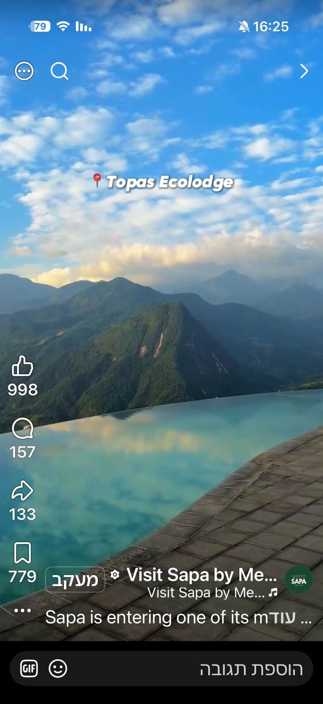
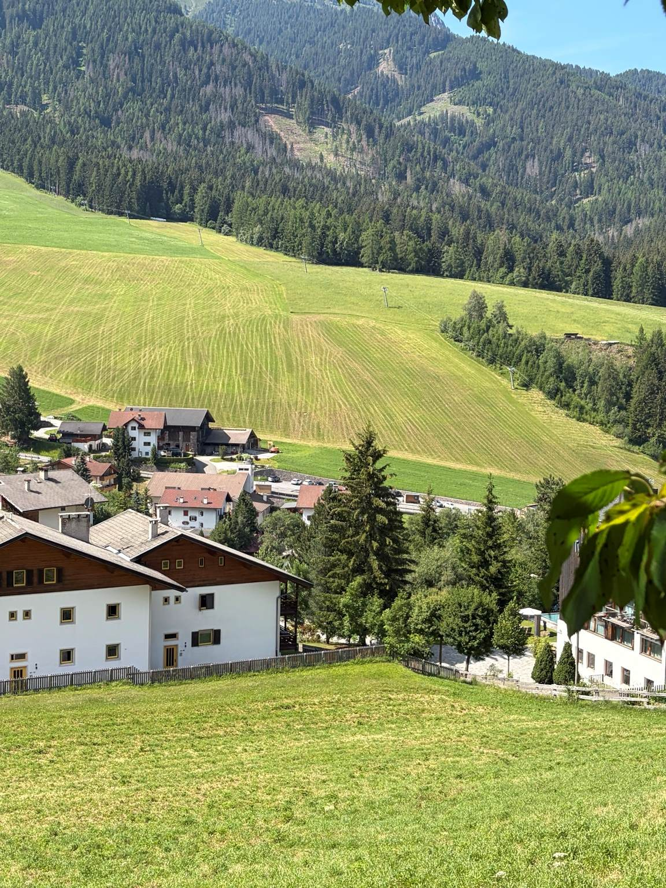

בוחרים יעד ותאריכים
מספרים מי נוסע, מה הקצב שלכם ומה חשוב לכם לראות ולעשות.
בונים מסלול אישי לפי היעד, התאריכים, מי שנוסע והקצב שלכם — ומרכזים במקום אחד את הימים, המפות, הלינות והעדכונים.
שלושה שלבים פשוטים, עם אפשרות לחזור ולערוך בכל זמן.
מספרים מי נוסע, מה הקצב שלכם ומה חשוב לכם לראות ולעשות.
TripCraft מסדר את הימים, הנסיעות, אזורי הלינה ונקודות העניין למסלול הגיוני.
פותחים כל יום, ניווט, לינה והערות מהטלפון ומעדכנים את המסלול לפי הצורך.
מסלולים שנבנו סביב ימים, נסיעות ולינות — עם מידע שימושי לפני שיוצאים לדרך.

הרי הטטרה, אגמים, רכבלים ובודפשט במסלול רכב שמשלב טבע עם סיום עירוני.
למסלול ולמדריך ←
מסלול ארוך המחבר ערים, טבע, צפון וייטנאם, מרכז המדינה וסיום בבנגקוק.
למסלול ולמדריך ←מסלול עצמאי עם נקודות עניין, לינות וניווט בין אזורים שמתאימים לטיול רכב.
למסלול ולמדריך ←
אגמים, מעברי הרים, רכבלים ועיירות במסלול אלפיני עם דגש על סדר גאוגרפי.
למסלול ולמדריך ←
אגמים, מפלים, רכבלים ועיירות אלפיניות, עם שילוב נוח של מינכן.
למסלול ולמדריך ←מסלול קלאסי בין טבע לערים גדולות, עם חלוקת ימים ונסיעות בין התחנות.
למסלול ולמדריך ←מסלול ברור לכל יום במקום רשימות מפוזרות וקישורים שאבדו בדרך.
Google Maps ו־Waze זמינים מתוך הטיול כדי לעבור מהתכנון לביצוע.
הטיול נשמר בחשבון וניתן לעריכה גם אחרי שבניתם את הגרסה הראשונה.
אשף תכנון, עריכת ימים ושיחה עם עוזר התכנון.
מסלולים אמיתיים להשראה, פתיחה והתאמה אישית.
Excel / Word / PDF לתבנית TripCraft.
בדיקות, טיולים מיובאים והכנה להרשאות Admin.
לא עוד מסמך טיול — פלטפורמה חכמה שמלווה את הטיול שלכם מהרעיון ועד החזרה הביתה.
TripCraft מרכזת את תכנון הטיול, המסלול והעדכונים במקום אחד. אפשר לבחור הצעה קיימת, להתאים מסלול אליכם, לייבא מסלול בפורמט האחיד שלנו או לבנות טיול חדש בעזרת AI — לפי התאריכים, הנוסעים, הגילאים, הקצב והדברים שאתם באמת אוהבים לעשות.
בחשבון האישי נשמרת היסטוריית הטיולים שלכם: שם הטיול, היעד, התאריכים והקישור האישי. אפשר לחזור לטיול בכל זמן — גם לאחר שהסתיים. במהלך התכנון והנסיעה תוכלו להמשיך לשפר את המסלול דרך AI שמחובר לטיול שלכם: לקצר יום, להחליף נקודה, להתאים למזג האוויר או לשנות את התוכנית בלי להתחיל מחדש.
מתכננים פעם אחת. ממשיכים לשפר עד שחוזרים הביתה.גלו מסלולים אמיתיים, רעיונות לימים, אזורי לינה, נקודות עניין וטיפים שימושיים ליעדים שונים.
המלצות לינה לפי מסגרת הטיול, מספר הלילות והעדפת רמת המלון. החיפוש נפתח ב־Booking.
אשף חכם שמתחיל בכמה שאלות קצרות, ואז ממשיך לשיחה פתוחה בלי להגביל אותך.
זהו שלב בחירה אמיתי לפני אישור הטיול. TripCraft מציג היכן מומלץ לישון, מספר לילות וטווח מחיר; בחיבור Booking יוצגו מלונות זמינים ותעריף חי.
אחרי יצירת הטיול תוכלו לשנות ימים, יעדים, לינות ואילוצים. שינוי שמשפיע על המסלול יחושב מחדש ויוצג לאישור.
הדביקו פוסט, לינק או המלצה. TripCraft יציע לאיזה יום לשבץ אותו, ויתריע אם הוא נראה רחוק או לא הגיוני למסלול.
היבוא עובד רק בפורמט TripCraft האחיד. המערכת בודקת את המבנה לפני יצירת הטיול.
Excel: .xlsx / .xls · CSV: .csv עם פסיקים · Word: .docx עם טבלה · PDF: PDF טבלאי עם אותן כותרות.
חמשת הטורים, בסדר הזה:
| תאריך | מאיפה | לאן | לינה (עיר או מלון) | מה עושים (מלל) |
|---|---|---|---|---|
| 19.6.2027 | Nice Airport | Gordes | Avignon | איסוף רכב, עצירה בגורד וסיור ערב. |
המערכת תזהה את היום, תאמת נקודות, תכין Waze ו־Google Maps, תייצר טיול בתבנית TripCraft ותציג את הטיול המלא לעריכה ושיתוף.
כל רכישה משויכת ל-Trip ID אחד. הטיול נשאר שלכם; פעולות AI מוגבלות לפי החבילה.
10 שינויי AI נוספים לאותו Trip ID.
בדקו את הפריטים. לפני תשלום נדרשת הרשמה או כניסה לחשבון מאומת.
במערכת האמיתית פרטי הכרטיס יוזנו אצל ספק הסליקה. TripCraft ישמור רק מזהה עסקה, סכום, סטטוס ו-4 ספרות אחרונות.
מזינים אימייל פעם אחת. TripCraft בודק אם אתם כבר רשומים ושולח קוד OTP למייל.
שלחנו קוד האימות אל:
Enter the code you received by email.
כאן נשמרת היסטוריית הטיולים שלכם — שם הטיול, היעד, התאריכים והקישור האישי, גם לאחר שהטיול הסתיים.
נוסחי עבודה לגרסת הפיתוח. לפני השקה מסחרית יועברו לבדיקה משפטית.
נשמור רק שם פרטי, שם משפחה, טלפון, אימייל, Trip ID, רכישות ונתוני שימוש הדרושים לשירות. אין לשמור מספר כרטיס מלא, CVV, דרכון או תעודת זהות.
בפרודקשן אימות OTP, הרשאות, נתוני לקוחות, תשלומים ומפתחות API יטופלו בשרת מאובטח בלבד. GitHub Pages ישמש Frontend ציבורי בלבד.
הממשק כולל ניווט מקלדת, ניגודיות, הגדלת טקסט, טקסט חלופי, RTL/LTR ותפריט נגיש במובייל. לפני השקה תבוצע בדיקת נגישות מלאה.
כל רכישה היא עבור Trip ID אחד. שינוי יעד מהותי ייחשב טיול חדש. תנאי הביטול, ההחזרים ו-Affiliate יוגדרו בתקנון הסופי.
לחץ על יום כדי לפתוח פירוט מלא.